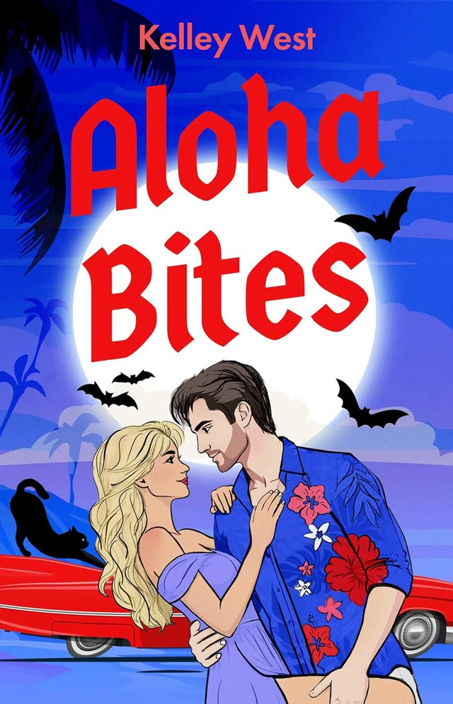

Coming July 27, 2027 from Pocket Books
Willa Reed came to Hawaii for happily ever after. Instead, she got a paranormal detective agency, a missing woman who looks exactly like her, and a past she doesn’t quite remember.
Mystery writer Willa Reed’s fresh start in paradise isn’t exactly going according to plan. Her books aren’t selling and her boyfriend dumps her as soon as she arrives. At least she’s managed to land a job at The Registry, a detective agency run by the maddeningly handsome Luke Drake.
Luke is brooding, secretive, and suspiciously nocturnal. And stranger still is the way he looks at her: like he knows her.
Then a tourist vanishes, and Willa is stunned to discover that the missing woman looks almost exactly like her. When the case points toward a powerful immortal with an unsettling interest in Willa, she is pulled into a hidden world of ancient magic, vampire politics, and secrets The Registry has kept buried for centuries.
Some mysteries are buried in the past. Some love stories are, too…
Preorder on Amazon